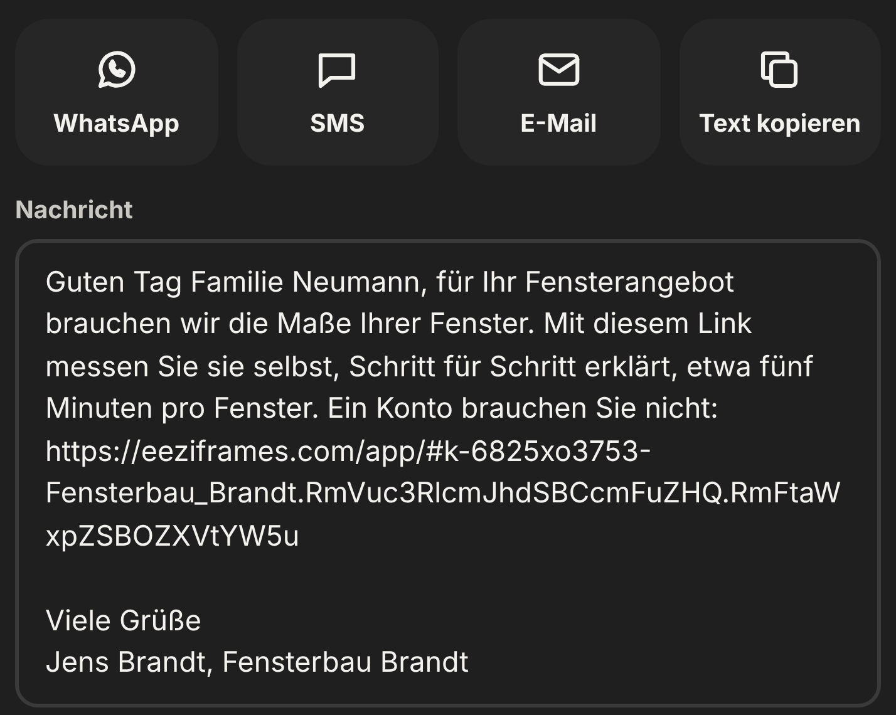

Klick 4 von 4
Link schicken
Absender:
Sie.
Die Nachricht ist vorformuliert und trägt Ihren Namen. Sie geht über Ihr WhatsApp, per SMS oder E-Mail.
4

Link schicken
Die Nachricht ist vorformuliert und trägt Ihren Namen. Sie geht über Ihr WhatsApp, per SMS oder E-Mail.
